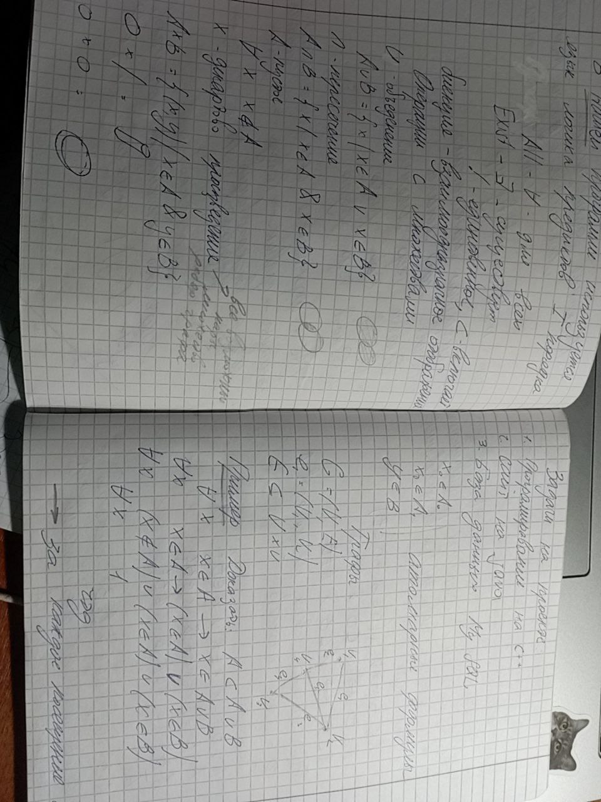
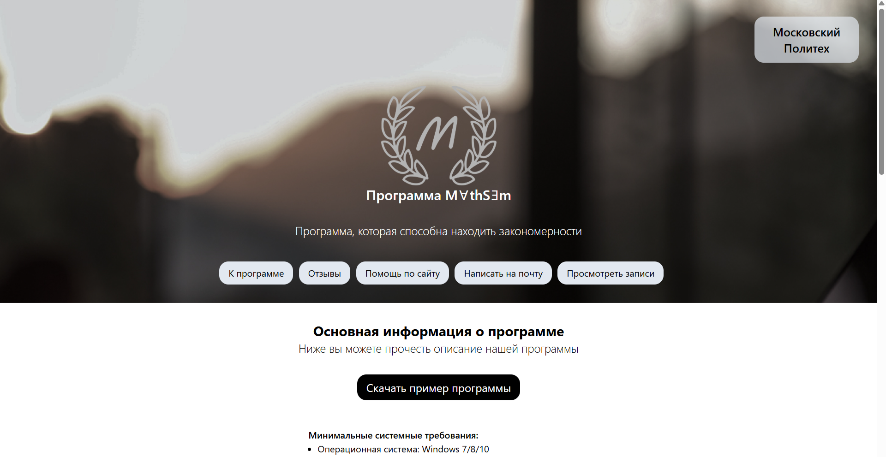

Изучение и закрепление материала студентами 1ого курса
Был изучен материал по основы алгебры логики и теории множеств. Для закрепления была написана работа направленная на понимаю материала, а также умение применить знания в реальных задачах
Разработка прототипа сайта в Figma
Был разработан прототип сайта в Figma
Сверстать страницы сайта по прототипу
Изучение материалов
Было изучено несколько тем, такие как: структуру данных для хранения формул в программе, разобраться как формируется файл *.fms., анализ особенностей записи формул в форате *.docx, изучение схем в VUE, и тд.